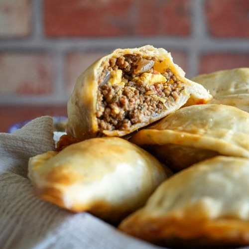
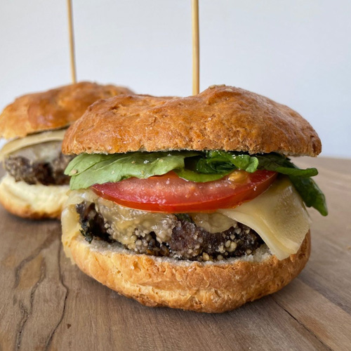
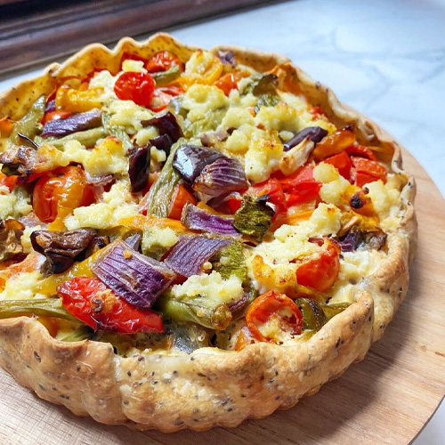

40 min | Media | 16 unidades
Chipá de queso
Una receta típica con fécula de mandioca pura y doble, con...
Ver recetaUn rincón donde amasar sin gluten es simple y reconfortante. Tartas, panes, empanadas y muchas comidas que te solucionan almuerzos, cenas y antojos.
Mira la receta salada de la semana!
40 min | Media | 16 unidades
Una receta típica con fécula de mandioca pura y doble, con...
Ver receta
25 min | Fácil | 4 unidades
Masa flexible de maíz y fécula que no se rompe al doblarla, rellena de...
Ver receta
45 min | Fácil | 1 unidad
Una típica comida pero con masa libre de gluten, leudada lent...
Ver receta
50 min | Media | 12 unidades
Clásica masa de premezcla que no se rompe, con jugosa car...
Ver receta
30 min | Fácil | 4 unidades
Jugosa carne casera entre esponjosos panes de arroz libres de glu...
Ver receta
45 min | Media | 1 unidad
Masa crujiente de semillas sin gluten que no se humedece, con ver...
Ver recetaMostrando página 1 de 20 (60 recetas)
¡Manda tu receta para compartir con la comunidad! Junt@s construimos un recetario más rico, accesible y con amor.
Compartir mi receta